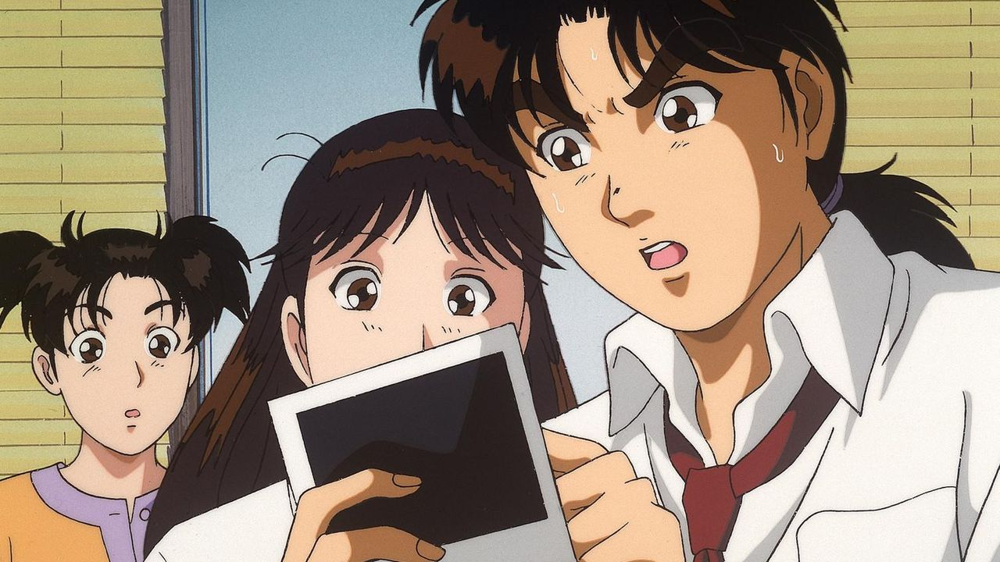

하는 일이 만화 시청하는 것 밖에 없던 저도 싫어하는 만화가 있었더랬죠...
또봇
별 이유는 없고 일본만화만 좋아했어서 (2D) 3D가 많았던 국내만화를 정말 싫어했는데
그중에서도 또봇을 가장 싫어했던 것 같네요!! 싫은데 볼 건 없고 만화는 보고싶으니까
억지로 봤던 기억이 있어요.
중학생땐 또봇의 재미를 알고 공식 채널에 올라온 또봇을 틈 나면 시청했었습니다 ㅎㅎ
심슨
어렸을 때 기억으론 더빙도 아니고 자막판으로 했던 거 같은데 뭐라는지도 모르겠고
징그럽고 불쾌한 느낌을 주던...ㅜㅜ 항상 늦은시간에 방영했어서 만화 더 보고싶은데
나오는 게 심슨 밖에 없어서 억지로 잤던 기억이..;;
지금도 별로 좋아하지 않습니다!

소년탐정 김전일
코난도 무서워 죽겠는데 초등학생이 보기엔 잔인했던 김전일...ㅜ
김전일만 나오면 후다닥 채널을 돌렸던 기억이 있네요.^^
지금도 잔인한 걸 잘 못 봐서 딱히 보고싶진 않습니다!!